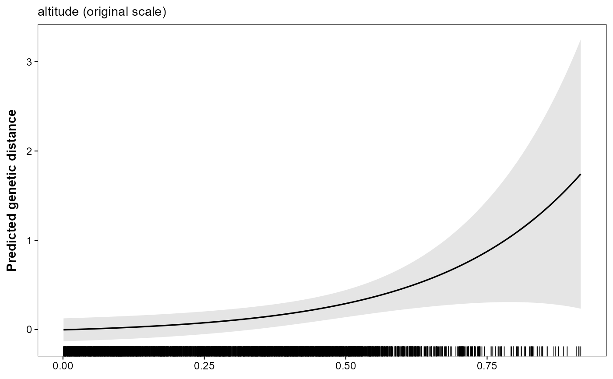
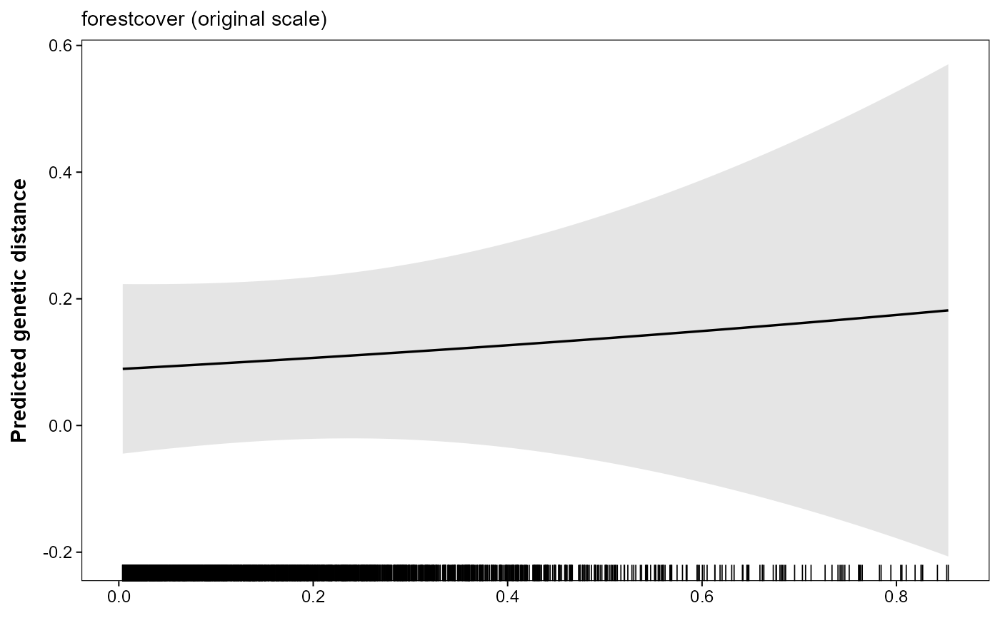
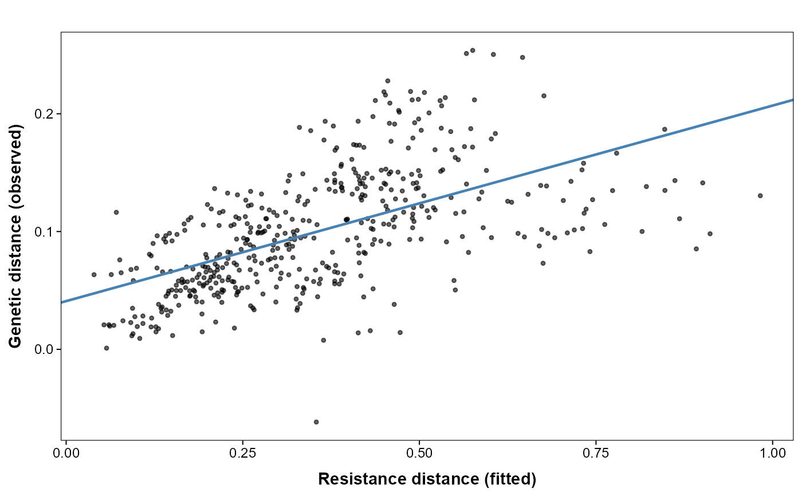
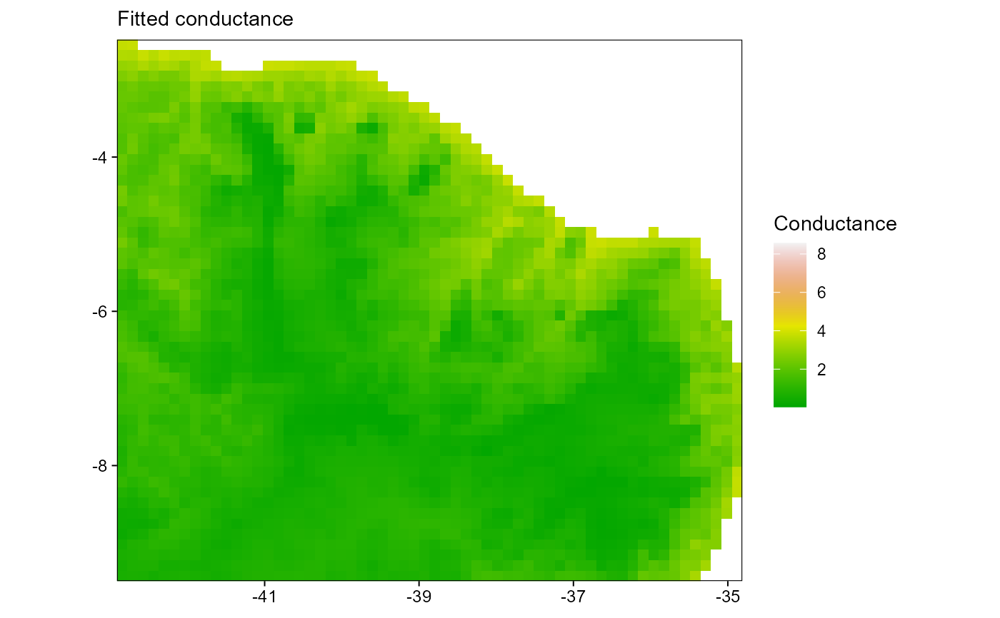
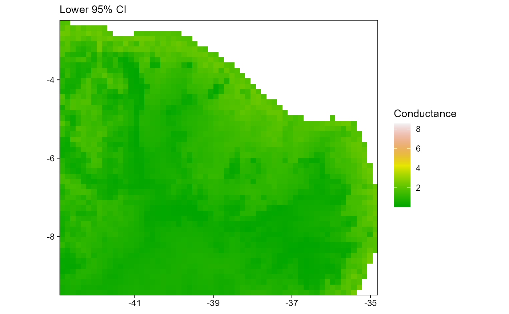
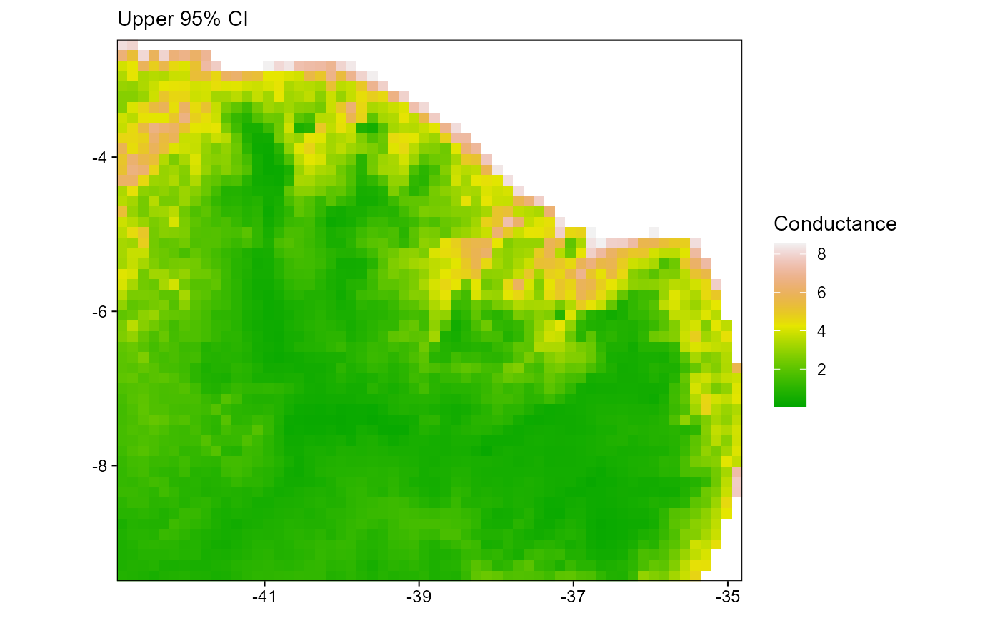
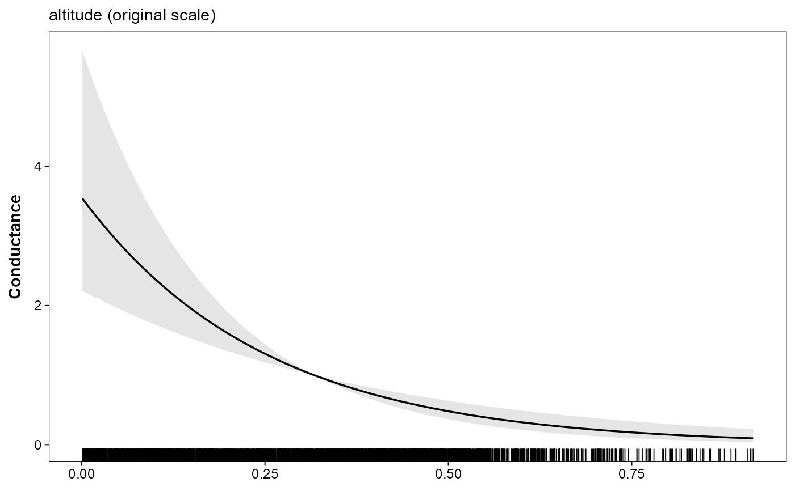
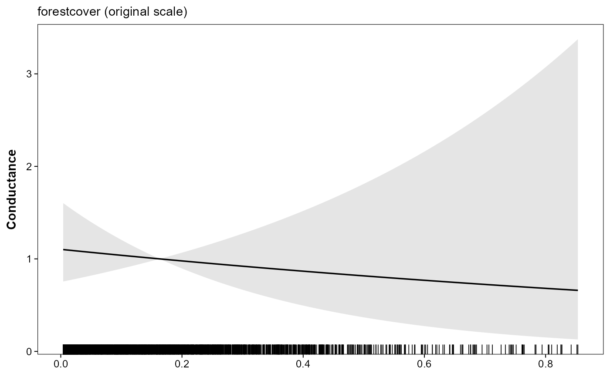

Plot a fitted model: fit, surface, marginal curves, and smoothing kernels
Source:R/plot_terradish.R
plot.terradish.RdFive plot types for objects returned by terradish. The
default type, "marginal_response", and the "surface" and
"marginal" types need the graph, so call
plot(fit, data = surface); plot(fit) alone stops with an
error. Only type = "fit" and type = "sigma" work without
data.
"fit"Observed vs. fitted response values. Distance-response models are shown as pairwise genetic distance against fitted resistance distance; covariance-response models such as
wishart_covarianceare shown as observed genetic covariance against fitted genetic covariance."surface"Fitted conductance surface with asymptotic confidence interval bounds, displayed in three side-by-side panels.
"marginal"Marginal association of each raster covariate with conductance, varying one covariate at a time while averaging over the observed values of all other model covariates, with a pointwise confidence band (95% by default; see
quantile) via the delta method. For Gaussian scale-aware conductance models, these curves are conditional on the fittedsigmavalues and are shown on the smoothed covariate scale. For spline-expanded conductance models fromsmooth_loglinear_conductance, panels are shown against the original covariate named inside eachs()term rather than against the individual basis columns."marginal_response"Approximate response-scale marginal associations obtained by mapping the marginal conductance curve through the fitted measurement-model mean and adding predictive bands that combine
thetauncertainty, conditionalphiuncertainty, and the residual variance implied bytaufor distance-response models. Covariance-response fits fromwishart_covarianceare shown as the average fitted genetic covariance over the modeled lower triangle. For Gaussian scale-aware conductance models, the predictive bands are likewise conditional on the fittedsigmavalues. Each curve sets one covariate to a common value in every cell. In a model with a single covariate this makes conductance uniform, so the curve is the"marginal"conductance curve inverted and rescaled; the plot is most informative when other covariates still vary across the landscape."sigma"For Gaussian scale-aware conductance models, plots the fitted Gaussian kernel against distance for each
sigmaterm, with a dashed line at the fitted distance containing 90% of the one-dimensional kernel mass and a shaded interval from the Wald confidence interval of that kernel-mass distance. These distances summarize the fitted smoothing kernel and are not movement or dispersal distances.
Usage
# S3 method for class 'terradish'
plot(
x,
type = c("marginal_response", "fit", "surface", "marginal", "sigma"),
data = NULL,
covariates = NULL,
marginal_covariates = NULL,
conductance_model = NULL,
distance_per_map_unit = NULL,
distance_unit = NULL,
quantile = 0.95,
n = NULL,
support = c("none", "focal"),
support_probs = c(0, 1),
clamp_covariates = NULL,
...
)Arguments
- x
A fitted
terradishobject.- type
One of
"marginal_response"(default),"fit","surface","marginal", or"sigma".- data
The
terradish_graphused when fittingx. Required fortype = "surface",type = "marginal", and the defaulttype = "marginal_response"; these types stop with an error when it is missing.- covariates
Optional
SpatRasterof covariates on their original (unscaled) scale. When supplied fortype = "marginal", the x-axis of each panel is back-transformed to the original units using the corresponding per-layer offset and divisor. Layer names must match the covariate names used in the model formula.- marginal_covariates
Optional character vector used with
type = "marginal"ortype = "marginal_response"to plot only selected covariate panels. Values should usually be raw formula variable names such as"altitude"; displayed panel labels are also accepted.- conductance_model
Optional conductance model factory used when fitting
x. When omitted,plot()first tries to reuse the fitted conductance model stored inx; if that is unavailable, it falls back tologlinear_conductance. Gaussian scale-aware fits reuse the fitted conductance model automatically.- distance_per_map_unit
Optional positive scalar used by
type = "sigma"to convert map units into a user-facing distance unit such as kilometers.- distance_unit
Optional label used with
distance_per_map_unitfortype = "sigma".- quantile
Confidence level for interval bands. Default
0.95. This is the quantity thatconfint()callslevel.- n
Number of evaluation points for each marginal-association curve. Defaults to
100for"marginal_response"(each point requires a full Laplacian solve) and200for"marginal". Supply an explicit integer to override.- support
Optional support constraint used for
type = "surface","marginal", and"marginal_response". Use"none"(default) to evaluate over the full graph covariate domain, or"focal"to constrain selected covariates to the empirical support at focal sampling cells (data$demes).- support_probs
Optional length-2 probability vector used with
support = "focal"to define clamping bounds from focal-cell quantiles. The defaultc(0, 1)uses the focal min/max; for robust trimming, values likec(0.01, 0.99)are often useful.- clamp_covariates
Optional character vector of covariate names to clamp when
support = "focal". Defaults to all numeric covariates used by each plot type.- ...
For
type = "fit", the base-style argumentsxlab,ylab,main,pch,cex, andcol; anything else is passed to the point layer (ggplot2::geom_point()). Ignored for the other types.
Value
A plot object that is returned visibly so base R auto-printing works as expected:
"fit": aggplotobject with observed-vs-fitted pairwise distances or genetic covariance, according to the response model."surface","marginal","marginal_response", and"sigma": either a singleggplotobject (one panel) or a named list ofggplotobjects (multiple panels), with one plot per panel/covariate.
Details
For type = "surface", "marginal", and
"marginal_response", optional support-constrained evaluation can be
requested with support = "focal" to clamp selected covariates to
empirical focal-site support before prediction.
Worked examples
vignette("v01-getting-started", package = "terradish"),
vignette("v07-gaussian-scale-optimization", package = "terradish"),
vignette("v06-spline-conductance", package = "terradish").
Examples
# \donttest{
data(melip)
covariates <- c(terra::unwrap(melip.altitude),
terra::unwrap(melip.forestcover))
coords <- terra::unwrap(melip.coords)
names(covariates) <- c("altitude", "forestcover")
# Coarsened so the example runs quickly; name layers, then scale.
covariates <- scale_covariates(terra::aggregate(covariates, fact = 3,
na.rm = TRUE))
# Keep one site per raster cell (some melip sites share a cell).
keep <- !duplicated(terra::cellFromXY(covariates, terra::crds(coords)))
coords <- coords[keep]
Fst <- melip.Fst[keep, keep]
surface <- conductance_surface(covariates, coords)
fit <- terradish(Fst ~ altitude + forestcover, surface,
measurement_model = mlpe)
# The default type needs the graph: approximate response-scale marginal
# associations with predictive bands.
plot(fit, data = surface)


# Observed vs. fitted pairwise genetic distances (no graph needed)
plot(fit, type = "fit")

# Fitted conductance surface with 95% CI (three-panel figure)
plot(fit, type = "surface", data = surface)



# Marginal-association plots. Because the layers were scaled with
# scale_covariates(), the x-axes are back-transformed to original units.
plot(fit, type = "marginal", data = surface)


# For Gaussian scale-aware fits, visualize the fitted sigma kernels
# plot(fit_gaussian, type = "sigma")
# }